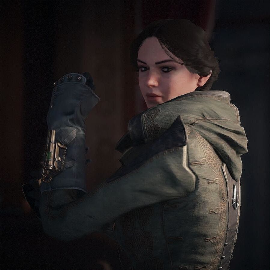

Lydia Frye
Născută într-un confort relativ, Lydia a fost inițial reticentă să se alăture Frăției, ca și restul familiei sale, alegând să se concentreze pe studiile ei. Prin educația sa, ea a realizat totuși amploarea influenței Templierilor în întreaga lume. Acest lucru, combinat cu pierderea prietenilor și a familiei în războiul asasin-templier, a condus-o pe Lydia să accepte în cele din urmă moștenirea sa de asasin și să se alăture luptei împotriva templierilor. Întrucât părinții ei erau frecvent absenți, angajați în misiuni pentru Frăția din străinătate, Lydia s-a adresat bunicului și bunicii ei, Evie și Jacob Frye, pentru pregătire. De la ei, ea a învățat să analizeze situațiile și să planifice în consecință, totuși să rămână suficient de flexibilă pentru a improviza atunci când lucrurile nu merg bine. La un moment dat, Lydia s-a îndrăgostit de asasinul Sam Crowder, cu care s-a căsătorit cu puțin timp înainte de izbucnirea primului război mondial. În timp ce soțul ei, la fel ca mulți asasini britanici, s-a înrolat în cele din urmă în armată, Lydia a rămas la Londra, pentru a proteja orașul împotriva spionilor germani și a cavalerilor Templieri.
În 1916, la ordinul lui Winston Churchill, Lydia s-a infiltrat și a eliminat o echipă de spionaj formată din templieri germani din Tower Bridge. Ulterior, ea a căutat restul grupului și liderul pe care îl considera a fi o chestiune presantă de securitate națională pe care nu a putut să o discute cu guvernul, deoarece nu avea dovezi suficient de puternice. În schimbul serviciilor sale, Churchill i-a promis Lydiei că va face tot ce poate pentru în legătură cu situația femeilor, când se va întoarce în parlament după război.
Lydia era echipată cu același model de Hidden Blade și cu același arsenal pe care îl foloseau mentorii ei cu aproape cincizeci de ani mai devreme. Mai exact, ea a folosit un kukri identic cu cel folosit anterior de Jayadeep Mir, precum și un „Fulger” M1877. Lydia poseda abilitățile atât ale bunicului ei Jacob cât și ale lui Evie și, ca și aceștia, poseda trăsătura rară numită "Viziunea Vulturului".